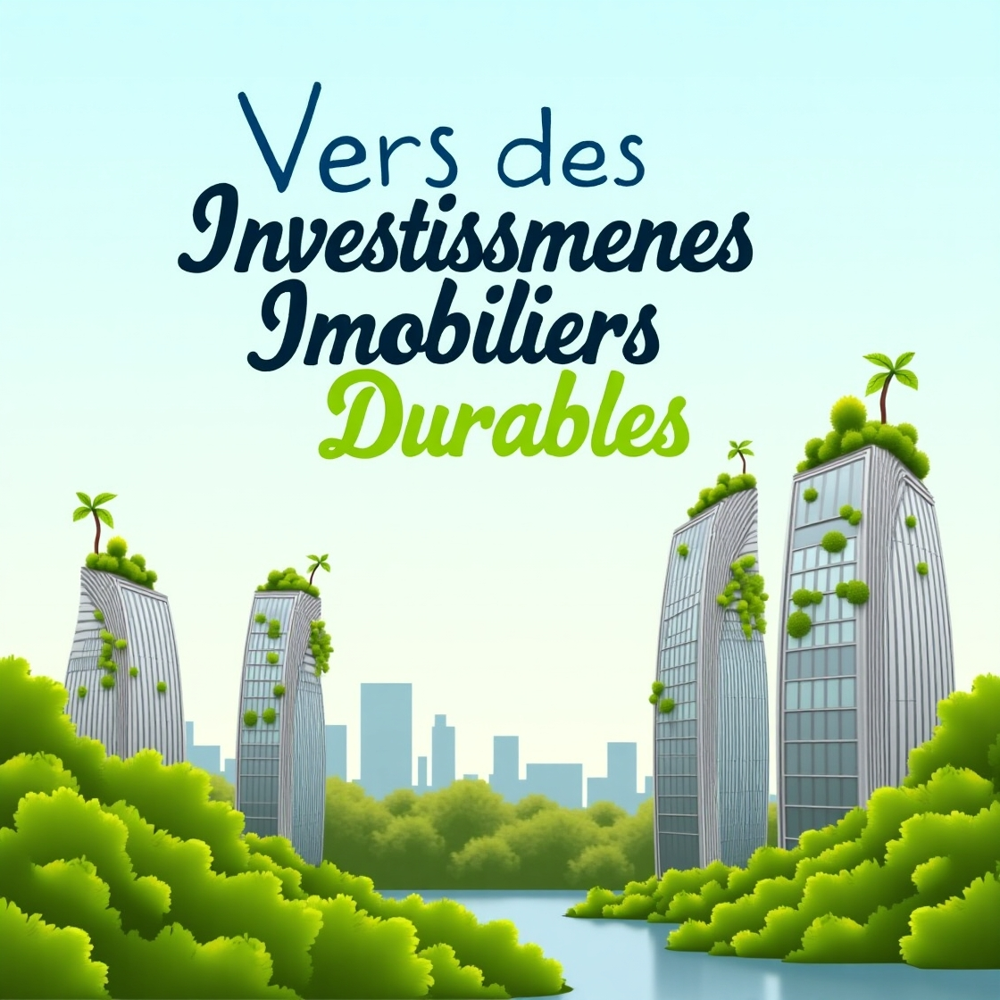
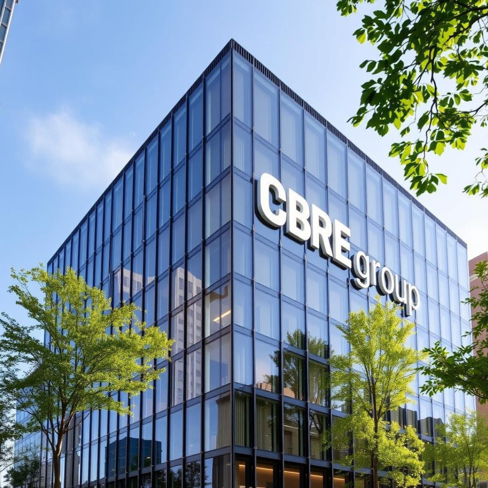
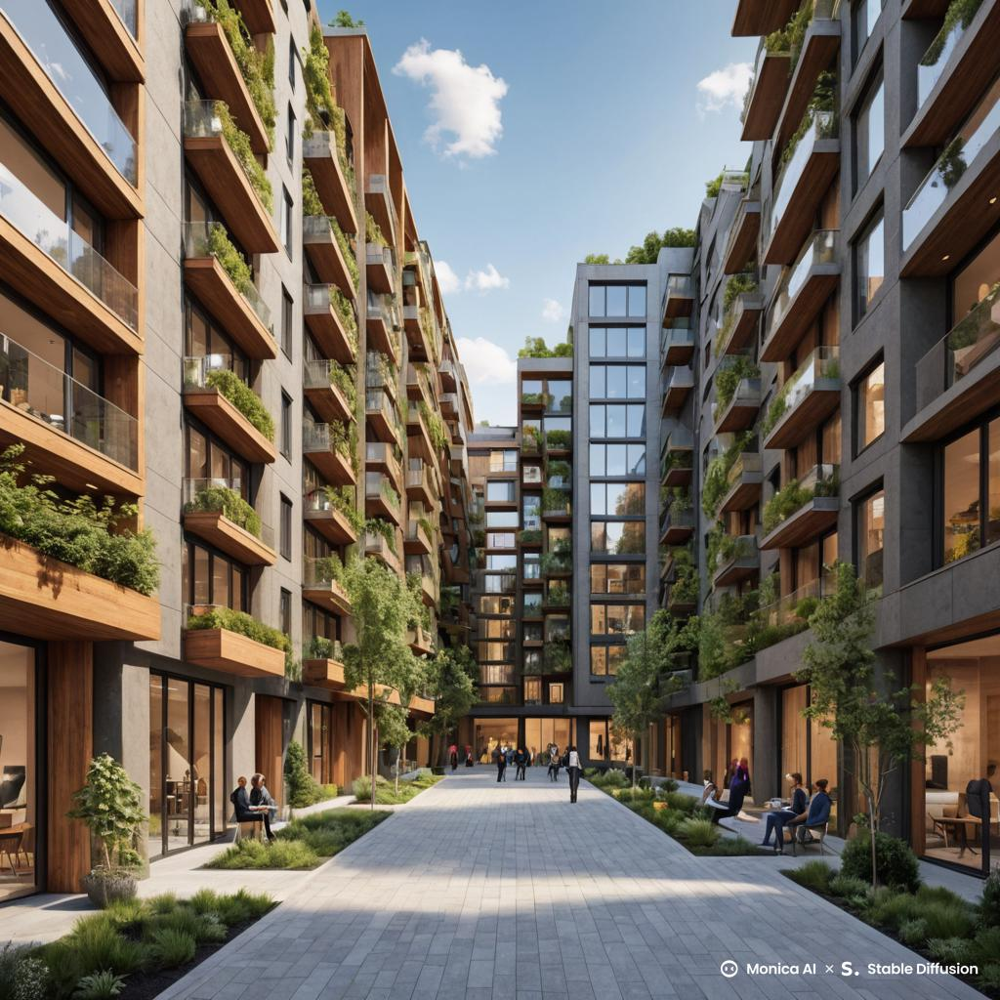
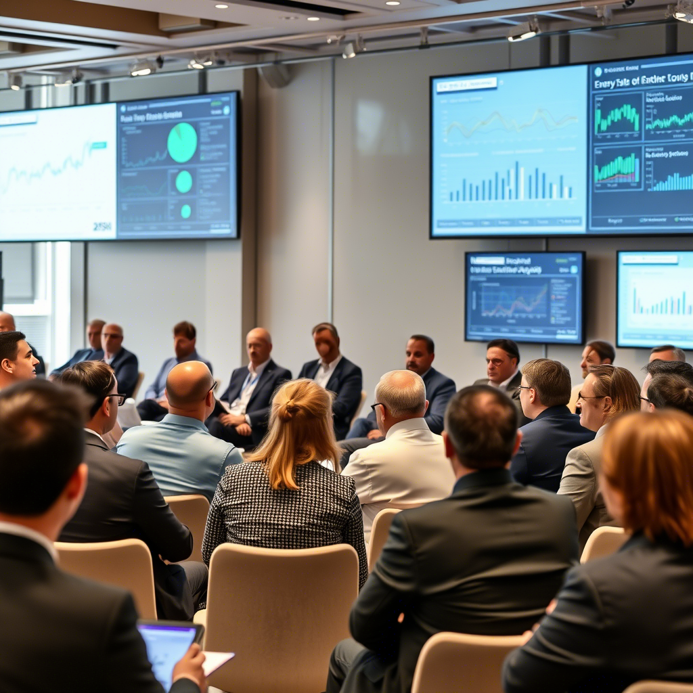

Les Investissements Phare dans l’Immobilier : Projets, Tendances et Perspectives d’Avenir
Introduction
L’immobilier demeure l’un des piliers fondamentaux de l’économie mondiale. Véritable levier de création de richesse, ce secteur mobilise chaque année des investissements colossaux dans des projets résidentiels, commerciaux et mixtes. Les montants investis peuvent atteindre plusieurs dizaines de milliards de dollars, transformant des espaces urbains, dynamisant des économies locales et influençant les politiques d’urbanisme.
Cet article se propose de dresser un panorama complet des investissements phares dans l’immobilier. Nous aborderons d’abord des projets emblématiques qui ont marqué l’histoire récente, avant d’analyser les tendances actuelles et d’identifier les acteurs majeurs qui font bouger le marché. Nous explorerons également les défis auxquels le secteur doit faire face, notamment dans un contexte de transition énergétique, de digitalisation et d’évolution des comportements des consommateurs, et nous terminerons par un regard sur les perspectives d’avenir et les opportunités à venir.
1. Projets Immobiliers Emblématiques
1.1 Hudson Yards – Le Joyau de Manhattan

Situé au cœur de Manhattan, Hudson Yards est l’un des projets immobiliers les plus ambitieux et coûteux jamais réalisés aux États-Unis. S’étendant sur 28 acres, ce développement, évalué à environ 25 milliards de dollars, a transformé une ancienne zone industrielle en un quartier ultra-moderne intégrant des bureaux, des résidences de luxe, des espaces commerciaux et des espaces publics.
1.1.1 Impact Économique et Social
Hudson Yards est bien plus qu’un simple projet de construction : il s’agit d’un véritable moteur économique. Le développement devrait générer des milliers d’emplois, tant lors de la phase de construction que pendant l’exploitation quotidienne, grâce aux services et commerces qu’il abrite. Par ailleurs, le projet contribue à la revitalisation de l’économie locale et à l’augmentation de la valeur des propriétés environnantes. En intégrant des espaces publics et des infrastructures modernes, Hudson Yards crée un environnement attractif qui favorise la mixité sociale et la qualité de vie.
1.1.2 Innovation Architecturale et Développement Durable
L’architecture de Hudson Yards est audacieuse et novatrice. Des architectes de renom, tels que Thomas Heatherwick et Diller Scofidio + Renfro, ont collaboré pour concevoir des structures qui redéfinissent l’horizon de New York. Le projet comprend des éléments de développement durable, comme des toits végétalisés, des systèmes de collecte des eaux pluviales et des matériaux respectueux de l’environnement. Ces innovations garantissent non seulement une réduction de l’empreinte carbone du quartier, mais aussi un niveau de confort et d’esthétique élevé pour ses occupants.
1.2 Marina Bay Sands – L’Icone de Singapour
Inauguré en 2010, Marina Bay Sands est un complexe hôtelier et de loisirs qui a révolutionné l’image de Singapour sur la scène internationale. Avec un coût avoisinant les 8 milliards de dollars, ce projet multifonction comprend un casino, un centre de congrès, un centre commercial, et une plateforme d’observation qui offre une vue spectaculaire sur la ville.
1.2.1 Un Hub Touristique et Économique
Marina Bay Sands a transformé Singapour en une destination touristique de premier plan, attirant plus de 25 millions de visiteurs chaque année. Ce flux touristique génère d’importantes retombées économiques et diversifie l’économie locale. Le complexe a ainsi permis le développement de secteurs annexes, tels que la restauration, le commerce de détail et les services événementiels, renforçant la position de Singapour en tant que centre économique régional.
1.2.2 Engagement Écologique et Innovations Technologiques
Le développement de Marina Bay Sands s’inscrit également dans une démarche de durabilité. Des technologies écologiques, telles que l’utilisation de panneaux solaires et la collecte d’eau de pluie, ont été intégrées pour réduire la consommation énergétique du bâtiment. Par ailleurs, le projet se distingue par son design futuriste et innovant, avec une architecture qui repousse les limites du conventionnel, symbolisant l’ambition et l’avant-garde de Singapour.
1.3 The One – Le Summum du Luxe à Los Angeles
The One est un projet résidentiel de luxe situé à Bel-Air, Los Angeles, dont le coût est estimé à environ 500 millions de dollars. Avec une surface totale de 105 000 pieds carrés, cette résidence d’exception est conçue pour offrir des prestations haut de gamme inégalées.
1.3.1 Luxe, Exclusivité et Défis Financiers
Ce projet représente l’apogée de l’immobilier de prestige, destiné à une clientèle ultra-riche. The One se distingue par des caractéristiques uniques, telles qu’une discothèque privée, une salle de cinéma, une piscine à débordement, et des vues imprenables sur la ville de Los Angeles. Cependant, malgré la demande croissante pour des biens de ce calibre, le projet fait face à des défis financiers importants, tels que des retards de construction et la volatilité du marché du luxe. Ces obstacles illustrent les risques associés aux investissements dans le segment ultra-premium, mais ils n’en diminuent pas l’attrait pour les investisseurs cherchant à diversifier leur portefeuille avec des actifs à forte valeur symbolique et financière.
1.4 The Shard – La Fierté de Londres
The Shard, le plus haut gratte-ciel du Royaume-Uni, s’élève à 310 mètres et est devenu l’un des symboles modernes de Londres. Inauguré en 2013 pour un coût d’environ 1,5 milliard de dollars, ce bâtiment multifonction accueille des bureaux, des restaurants, un hôtel et des résidences.
1.4.1 Transformation Urbaine et Attractivité Touristique
En redéfinissant la silhouette de Londres, The Shard est devenu un point de repère incontournable pour les touristes. Sa plateforme d’observation, offrant des vues panoramiques sur la capitale, attire des millions de visiteurs chaque année et contribue à stimuler l’économie locale. Parallèlement, le projet a permis de revitaliser le quartier environnant, augmentant la valeur immobilière et renforçant la dynamique urbaine dans une zone autrefois en déclin.
1.4.2 Un Modèle de Développement Durable
The Shard intègre également des pratiques de développement durable. Le bâtiment a obtenu plusieurs certifications environnementales et utilise des technologies innovantes pour réduire sa consommation énergétique. Ce modèle de construction démontre qu’il est possible de conjuguer luxe, innovation et responsabilité écologique dans un projet d’envergure.
1.5 Songdo – La Ville Intelligente de Corée du Sud
Songdo, située près de Séoul, est une ville entièrement planifiée et un projet phare de développement urbain en Asie. Avec un investissement estimé à environ 40 milliards de dollars, Songdo se positionne comme une « ville intelligente » intégrant des technologies de pointe et des solutions durables.
1.5.1 Urbanisme Innovant et Développement Durable
Songdo a été conçue pour être un modèle d’urbanisme durable. La ville intègre de vastes espaces verts, des infrastructures écoénergétiques et des systèmes de transport intelligents visant à réduire l’empreinte carbone. Les technologies intégrées, comme les capteurs pour la gestion de l’énergie et la circulation, améliorent la qualité de vie des résidents et optimisent l’efficacité des services urbains.
1.5.2 Défis et Opportunités
Bien que Songdo présente de nombreux atouts en termes de durabilité et d’innovation, elle doit également faire face à des défis en matière d’attractivité. Malgré une planification rigoureuse, la ville peine parfois à attirer suffisamment de résidents et d’entreprises pour dynamiser son économie. Néanmoins, Songdo reste un exemple inspirant de transformation urbaine qui pourrait servir de modèle pour d’autres villes cherchant à allier développement économique et respect de l’environnement.
2. Tendances Actuelles dans l’Investissement Immobilier
2.1 Vers des Investissements Immobiliers Durables
La prise de conscience environnementale et la nécessité de réduire l’empreinte carbone poussent les investisseurs à privilégier des projets immobiliers durables.
2.1.1 Certifications Écologiques et Technologies Vertes
La certification LEED (Leadership in Energy and Environmental Design) est devenue un critère majeur pour les investisseurs. Les bâtiments certifiés LEED, grâce à leur efficacité énergétique et à leur impact environnemental réduit, attirent des capitaux importants. Les projets modernes intègrent de plus en plus de technologies vertes, telles que l’énergie solaire, la collecte d’eau de pluie et l’utilisation de matériaux recyclés.
2.1.2 Économie Circulaire et Stratégies de Rénovation
L’économie circulaire s’impose également dans le secteur immobilier. La réutilisation et le recyclage des matériaux de construction permettent de réduire les coûts et de promouvoir un développement respectueux de l’environnement. Des entreprises comme Skanska et Hines adoptent ces principes pour transformer leurs projets dès la phase de conception, offrant ainsi une alternative durable aux méthodes de construction traditionnelles.
2.2 L'essor des Résidences Multifamiliales
Face à une demande croissante de logements abordables dans les zones urbaines, les investissements dans les résidences multifamiliales connaissent une expansion notable.
2.2.1 Rendement Locatif et Stabilité
Les complexes résidentiels multifamiliaux offrent souvent des rendements locatifs attractifs, ce qui attire les investisseurs institutionnels et les particuliers cherchant à diversifier leur portefeuille. Ces projets permettent d’assurer une source de revenus régulière grâce à la location, tout en bénéficiant d’une demande locative stable, particulièrement dans les grandes agglomérations où l’accès au logement reste un enjeu majeur.
Étude de Cas : "The Collective" à Londres
À Londres, le projet "The Collective" illustre parfaitement la tendance du co-living. Ce modèle d’habitat partagé met l’accent sur la création d’espaces communs qui favorisent l’interaction sociale et la collaboration entre jeunes professionnels. En offrant des services partagés et des espaces de vie conviviaux, "The Collective" parvient à combiner rentabilité locative et qualité de vie, un duo particulièrement recherché sur le marché actuel.
2.3 L’essor des Propriétés Logistiques et de l’Immobilier Industriel
L’essor fulgurant du commerce électronique a transformé la demande pour des espaces logistiques modernes. Les entrepôts et centres de distribution sont devenus des investissements de choix pour capitaliser sur la croissance du e-commerce.
2.3.1 Optimisation de la Chaîne d’Approvisionnement
Les détaillants en ligne recherchent des espaces de stockage et de distribution équipés de technologies innovantes pour optimiser leurs chaînes logistiques. Selon CBRE, le marché immobilier logistique devrait continuer de croître en 2025, soutenu par l’augmentation constante du volume des transactions en ligne et la nécessité d’un accès rapide aux marchés.
Exemple : Prologis
Prologis se distingue par son portefeuille stratégique d’entrepôts situés dans des zones urbaines à forte densité. L’entreprise investit massivement dans des solutions technologiques telles que l’automatisation, les systèmes de gestion d’entrepôts intelligents et les solutions de surveillance en temps réel, améliorant ainsi l’efficacité opérationnelle et la rentabilité de ses actifs.
2.4 Les Espaces de Co-Working et la Révolution du Télétravail
La montée en puissance du télétravail a transformé le paysage de l’immobilier tertiaire. Les espaces de co-working, qui offrent une alternative flexible aux bureaux traditionnels, connaissent un succès grandissant.
2.4.1 Flexibilité et Collaboration
Ces espaces permettent aux entreprises de réduire leurs coûts fixes tout en offrant un environnement de travail stimulant et collaboratif. Des acteurs tels que WeWork et Spaces ont popularisé ce modèle, en proposant des formules d’abonnement et des contrats flexibles qui répondent aux besoins changeants des professionnels modernes.
Étude de Cas : WeWork et Spaces
Les espaces de co-working ont permis à de nombreuses start-up et PME de s’installer dans des environnements propices à l’innovation sans supporter les coûts élevés d’un bail à long terme. Ces environnements favorisent également le networking et la collaboration intersectorielle, des éléments essentiels dans un contexte économique en mutation.
2.5 Le Marché des Résidences Étudiantes et le Logement pour Seniors
L’investissement dans des segments spécialisés tels que les résidences étudiantes et les logements pour seniors présente un intérêt croissant, en raison des dynamiques démographiques et des besoins spécifiques de ces populations.
2.5.1 Résidences Étudiantes
Dans les grandes villes universitaires, la demande pour des logements adaptés aux étudiants reste forte. Ces investissements offrent des rendements stables en raison de la continuité de la demande durant toute l’année scolaire. Des acteurs comme Unibail-Rodamco-Westfield investissent dans des projets visant à répondre à cette demande, en créant des espaces modernes et fonctionnels.
2.5.2 Logement pour Seniors
Le vieillissement de la population mondiale crée également des opportunités dans le secteur du Senior Living. Les logements adaptés aux besoins des personnes âgées, intégrant des services de proximité et des équipements de sécurité, sont de plus en plus recherchés. Ce segment, qui offre souvent des rendements attractifs, représente un investissement stratégique pour l’avenir.
3. Les Acteurs Clés du Secteur Immobilier
3.1 Blackstone Group
Blackstone Group se positionne comme l’un des plus grands investisseurs immobiliers mondiaux, avec un portefeuille dépassant les 200 milliards de dollars. Grâce à une approche opportuniste, Blackstone acquiert des actifs sous-évalués et les valorise ensuite par des rénovations et une gestion active, ce qui lui permet d’accroître leur valeur sur le long terme.
3.1.1 Stratégies et Portée Internationale
Blackstone opère à l’échelle mondiale, influençant les marchés immobiliers sur plusieurs continents. Sa capacité à identifier des opportunités et à injecter des capitaux pour revitaliser des actifs vieillissants ou en difficulté en fait un acteur majeur dans le secteur. La diversification de son portefeuille, couvrant bureaux, hôtels, logements multifamiliaux et propriétés commerciales, lui permet de limiter les risques et de tirer profit de multiples sources de revenus.
3.2 Brookfield Asset Management
Brookfield Asset Management est également un acteur incontournable du marché immobilier, avec une approche axée sur la durabilité et la diversification sectorielle. Le groupe investit dans des projets variés, allant des immeubles de bureaux aux infrastructures énergétiques, en passant par le logement résidentiel.
3.2.1 Approche Durable et Diversification
Brookfield se distingue par son engagement envers des projets éco-responsables. En intégrant des technologies vertes et en mettant l’accent sur la durabilité, Brookfield répond aux exigences réglementaires tout en attirant des investisseurs soucieux de l’impact environnemental. La diversification de ses investissements permet également de stabiliser les rendements, même en période de volatilité économique.
3.3 Prologis
Leader mondial dans le secteur de l’immobilier logistique, Prologis gère un portefeuille d’une valeur d’environ 100 milliards de dollars. La société se concentre sur des marchés stratégiques, notamment dans les zones urbaines où la demande en espaces logistiques est forte.
3.3.1 Positionnement Stratégique et Innovations Technologiques
Prologis investit dans des technologies d’automatisation et des systèmes intelligents pour optimiser la gestion de ses entrepôts. Ces innovations permettent d’améliorer l’efficacité opérationnelle et de répondre aux exigences d’un marché en pleine croissance, notamment soutenu par l’essor du commerce électronique. La capacité de Prologis à se positionner dans des zones à forte demande lui confère un avantage compétitif indéniable.
3.4 CBRE Group

CBRE Group offre une gamme complète de services immobiliers, allant de la gestion d’actifs à la consultation stratégique. La société est reconnue pour ses analyses de marché approfondies, qui aident les investisseurs à prendre des décisions éclairées.
3.4.1 Expertise en Analyse et Accompagnement des Investisseurs
Les rapports détaillés de CBRE fournissent des insights essentiels sur les tendances du marché, les dynamiques de l’offre et de la demande et les perspectives de rendement. Cette expertise est cruciale pour orienter les stratégies d’investissement, surtout dans un contexte économique en mutation constante.
3.5 JLL (Jones Lang LaSalle)
JLL est un autre acteur majeur du secteur immobilier, spécialisé dans l’immobilier commercial. Grâce à une expertise sectorielle pointue, JLL aide les investisseurs à identifier les meilleures opportunités dans des segments variés, allant du logement multifamilial aux bureaux en passant par le commerce de détail.
3.5.1 Expertise Sectorielle et Conseils Stratégiques
Les analyses et rapports de JLL permettent aux investisseurs de comprendre les tendances du marché immobilier à l’échelle internationale. Cette capacité à décomposer les différents segments du marché offre un avantage stratégique pour optimiser les portefeuilles et anticiper les évolutions à venir.
4. Analyse Régionale des Investissements Immobiliers
4.1 Amérique du Nord
L’Amérique du Nord, avec ses métropoles telles que New York, San Francisco et Toronto, reste l’un des marchés les plus dynamiques pour l’immobilier. Ce marché est caractérisé par une forte demande locative et des investissements massifs dans des projets résidentiels et commerciaux.
4.1.1 Marché Résidentiel et Transformation des Espaces Commerciaux
La demande pour des logements multifamiliaux est particulièrement forte en raison de la hausse des prix et de la rareté des biens abordables dans les grandes villes. Parallèlement, l’essor du télétravail a poussé les investisseurs à repenser l’utilisation des espaces commerciaux traditionnels, avec un virage vers la reconversion de bureaux vacants en logements ou en espaces de coworking.
Étude de Cas : San Francisco
San Francisco, confrontée à une crise du logement, voit une augmentation significative des projets multifamiliaux afin de répondre à une demande croissante. Les investisseurs se concentrent sur des zones où la demande reste forte malgré la volatilité du marché.
Étude de Cas : Bureaux Vacants à New York
Dans certains quartiers de New York, le taux d’inoccupation des bureaux est élevé, ce qui incite les investisseurs à explorer des solutions innovantes, telles que la conversion de ces espaces en logements ou en espaces hybrides. Cette tendance contribue à redéfinir l’usage traditionnel des immeubles commerciaux.
4.2 Europe
L’Europe, notamment à Paris, Londres, Berlin et d’autres grandes métropoles, connaît une activité intense dans le secteur immobilier. Les investissements durables et les stratégies de rénovation sont au cœur des préoccupations des investisseurs européens.
4.2.1 Investissements Durables et Marché Logistique
En Europe, les normes écologiques strictes incitent les investisseurs à privilégier des actifs certifiés (LEED, BREEAM, etc.). Le secteur logistique est également en plein essor, stimulé par la croissance du commerce électronique et la nécessité d’optimiser la chaîne d’approvisionnement.
Étude de Cas : Green Building Council
Des initiatives comme celles du Green Building Council favorisent l’adoption de pratiques de construction durable. Les projets respectueux de l’environnement bénéficient de subventions et d’incitations fiscales, renforçant ainsi leur attractivité sur le marché.
Étude de Cas : Amazon en Europe
Amazon, en investissant massivement dans des entrepôts modernes, contribue à la transformation du marché logistique en Europe. Ces investissements permettent de répondre à la demande croissante et de stimuler l’activité économique dans des zones stratégiques.
4.3 Asie-Pacifique
La région Asie-Pacifique est l’un des marchés immobiliers les plus dynamiques, avec une croissance urbaine rapide et une forte demande en infrastructures modernes. Des villes comme Hong Kong, Tokyo, Singapour et Séoul se distinguent par leur densification et leur innovation.
4.3.1 Développements Verticaux et Initiatives Écologiques
Face à la rareté de l’espace, les projets immobiliers en Asie-Pacifique se caractérisent par des constructions verticales intégrant des espaces résidentiels, commerciaux et logistiques. Les gouvernements locaux encouragent également des pratiques de construction durables, telles que l’intégration de jardins urbains, de toitures végétalisées et de systèmes de gestion intelligente de l’énergie.
Étude de Cas : Hong Kong
À Hong Kong, la densification urbaine a conduit à la construction de gratte-ciel multifonctionnels, combinant bureaux, logements et commerces. Ces projets témoignent de l’innovation architecturale et de la capacité d’adaptation du marché face à des contraintes d’espace extrêmes.
Étude de Cas : Singapour
Singapour, grâce à des politiques urbaines ambitieuses, a su créer un environnement urbain moderne et durable. L’intégration d’espaces verts, l’optimisation de la circulation et la mise en place de technologies intelligentes placent la ville comme un modèle à suivre pour la durabilité et l’efficacité urbaine.
5. Défis et Enjeux du Secteur Immobilier
5.1 Volatilité Économique et Gestion des Risques
Le marché immobilier est intimement lié aux cycles économiques mondiaux. Les fluctuations économiques, telles que les variations des taux d’intérêt et les crises financières, ont un impact direct sur la demande et la valorisation des actifs.
5.1.1 Gestion des Risques et Stratégies de Diversification
La crise financière de 2008 a mis en évidence la nécessité d’une gestion rigoureuse des investissements immobiliers. Les investisseurs doivent adopter des stratégies de diversification pour limiter les risques, en répartissant leurs investissements sur différents types de biens et régions.
Étude de Cas : La Crise de 2008
La chute brutale des prix immobiliers lors de la crise de 2008 rappelle l’importance d’évaluer soigneusement chaque projet et de prévoir des mécanismes de gestion des risques pour éviter des pertes significatives. Les leçons tirées de cette période continuent d’influencer les stratégies d’investissement actuelles.
5.2 Évolution des Régulations et Normes Environnementales
Les normes réglementaires dans le secteur immobilier évoluent constamment, notamment en ce qui concerne la transition énergétique et la durabilité. Ces évolutions visent à réduire l’empreinte carbone des bâtiments et à promouvoir des pratiques de construction plus respectueuses de l’environnement.
5.2.1 Impact des Normes Énergétiques
Les nouvelles exigences en matière d’efficacité énergétique, telles que l’exclusion progressive des logements classés F et G du marché locatif, ont un impact direct sur les investissements. Les propriétaires doivent souvent réaliser des travaux de rénovation pour se conformer à ces normes, ce qui peut augmenter les coûts initiaux mais, à long terme, générer une valorisation accrue des biens.
Étude de Cas : La Réglementation Européenne sur l’Énergie des Bâtiments
Les directives européennes imposent des standards élevés pour les bâtiments neufs et existants. Ces normes, bien qu’exigeantes, offrent des opportunités pour ceux qui intègrent dès le départ des solutions technologiques pour optimiser la performance énergétique.
5.3 Concurrence et Pression sur les Prix
La concurrence sur le marché immobilier s’intensifie, notamment avec l’arrivée de nouveaux investisseurs et la multiplication des projets immobiliers. Cette dynamique exerce une pression sur les prix, rendant l’accès à certains segments du marché plus difficile.
5.3.1 Stratégies pour Faire Face à la Concurrence
Pour rester compétitifs, les investisseurs et promoteurs adoptent des stratégies innovantes telles que la reconversion de bureaux en espaces résidentiels ou la mise en place de projets mixtes alliant habitation, commerce et espaces de bureaux. La différenciation par des services additionnels et l’intégration de technologies innovantes permettent également de maintenir des marges bénéficiaires attractives malgré la pression concurrentielle.
Étude de Cas : Le Marché Résidentiel à Berlin
À Berlin, la forte demande pour le logement, conjuguée à la concurrence accrue, a conduit à une augmentation rapide des prix. Les investisseurs doivent alors adopter des stratégies différenciées pour accéder à des biens attractifs sans payer des surcoûts prohibitifs.
5.4 Les Défis du Financement et l’Accès au Crédit
L’accès au crédit reste un enjeu majeur pour les investisseurs immobiliers, particulièrement dans un contexte de hausse des taux d’intérêt. Les banques, devenues plus prudentes après les crises passées, imposent des conditions de financement plus strictes.
5.4.1 L’Impact de la Hausse des Taux d’Intérêt
La hausse des taux d’intérêt augmente le coût du financement, ce qui réduit le pouvoir d’achat des investisseurs et ralentit le volume des transactions. En 2023, on a observé une baisse de 20 % des transactions immobilières, un chiffre qui pourrait se maintenir en 2024 si les taux restent élevés.
Étude de Cas : La Baisse des Transactions en France
Les analyses récentes montrent une diminution significative du nombre de transactions immobilières en France, principalement en raison des conditions de crédit plus rigoureuses. Cela incite les acheteurs à repenser leurs stratégies d’investissement, favorisant par exemple l’achat dans des zones moins tendues ou dans des segments plus abordables comme les passoires thermiques rénovables.
6. Innovations et Transformations dans le Secteur Immobilier

6.1 L’Émergence de la PropTech
La PropTech, ou technologies immobilières, transforme radicalement la manière dont les actifs immobiliers sont développés, gérés et valorisés. Ces technologies couvrent un large éventail de solutions, allant des plateformes digitales de gestion locative aux systèmes de smart building basés sur l’Internet des objets (IoT).
6.1.1 Smart Buildings et IoT
Les bâtiments intelligents équipés de capteurs IoT permettent une gestion optimisée de l’énergie, de la sécurité et du confort des occupants. Ces systèmes contribuent à réduire les coûts opérationnels tout en améliorant la qualité de vie des résidents et des employés. Par exemple, des immeubles comme La Métropolitaine à Paris intègrent des solutions innovantes pour pallier les nuisances sonores et optimiser la régulation thermique.
6.1.2 Plateformes Digitales et Gestion Immobilière
Les outils digitaux permettent aux gestionnaires d’actifs immobiliers de suivre en temps réel la performance de leurs portefeuilles. Ces plateformes facilitent la gestion locative, l’entretien des bâtiments et même la prise de décision stratégique grâce à l’analyse de données en continu. Des entreprises telles que CBRE et JLL investissent dans ces technologies pour offrir à leurs clients des services toujours plus performants.
6.2 L’Économie Collaborative et le Co-living
Le mode de vie collaboratif et le concept de co-living sont en plein essor, notamment parmi les jeunes professionnels et les étudiants. Ce modèle d’habitat partagé permet de réduire les coûts et de créer des espaces de vie conviviaux.
6.2.1 Co-living : Un Nouveau Paradigme
Le co-living propose des solutions d’hébergement où les espaces privés sont complétés par des espaces communs, favorisant ainsi la mutualisation des ressources. Ce modèle séduit par sa flexibilité et son aspect communautaire, répondant aux besoins de ceux qui recherchent à la fois autonomie et vie en collectivité.
Étude de Cas : Projets de Co-living à Londres et à Paris
Des projets comme "The Collective" à Londres ou certains ensembles résidentiels à Paris intègrent le co-living comme concept central. Ces initiatives permettent aux investisseurs de générer des rendements stables tout en offrant un environnement de vie innovant et partagé.
6.2.2 Partage d’Espaces Commerciaux
Au-delà du résidentiel, le partage d’espaces commerciaux permet aux petites entreprises d’accéder à des locaux modernes sans les contraintes d’un bail à long terme. Des plateformes dédiées facilitent la location temporaire d’espaces, favorisant ainsi l’innovation et la collaboration interentreprises.
6.3 Adaptation aux Changements Sociaux et Démographiques
Les mutations démographiques et sociales influencent profondément le secteur immobilier. Le vieillissement de la population, la croissance des villes moyennes et l’essor du télétravail redéfinissent les priorités des investisseurs et des promoteurs.
6.3.1 Logement pour Seniors et Adaptabilité
Avec le vieillissement de la population, la demande pour des logements adaptés et sécurisés est en forte augmentation. Les promoteurs intègrent des aménagements spécifiques, tels que des dispositifs de sécurité avancés, des espaces accessibles et des services de proximité, pour répondre aux besoins des seniors.
6.3.2 Urbanisation et Transformation des Centres-Villes
La densification des centres-villes et l’exode des zones périurbaines vers les villes moyennes modifient les dynamiques immobilières. Alors que les grandes métropoles voient leurs prix chuter ou stagner, des villes de taille moyenne bénéficient d’une attractivité renouvelée, offrant des opportunités d’investissement intéressantes et des rendements locatifs attrayants.
Étude de Cas : Renouveau Urbain à Saint-Denis et à Rennes
Des villes comme Saint-Denis et Rennes ont amorcé une transformation urbaine profonde, avec des projets d’infrastructure et des initiatives de réhabilitation qui stimulent la demande immobilière. Ces villes offrent un équilibre entre qualité de vie, accessibilité financière et dynamisme économique, attirant ainsi de nouveaux résidents et investisseurs.
6.4 Investissements Alternatifs : SCPI, Crowdfunding et Pierre Papier
Pour diversifier les risques et faciliter l’accès au marché immobilier, de nombreux investisseurs se tournent vers des solutions alternatives.
6.4.1 Les SCPI (Sociétés Civiles de Placement Immobilier)
Les SCPI permettent aux particuliers d’investir dans l’immobilier sans avoir à acheter un bien en direct. Ces sociétés collectent les fonds des investisseurs pour acquérir un portefeuille d’actifs immobiliers, dont les loyers sont ensuite redistribués. Les nouvelles réglementations renforcent la transparence et la liquidité des SCPI, en obligeant à une évaluation semestrielle de leur patrimoine et en abaissant le prix de souscription des parts.
6.4.2 Crowdfunding Immobilier
Le crowdfunding immobilier offre la possibilité d’investir dans des projets immobiliers avec un ticket d’entrée réduit. En prêtant de l’argent à des promoteurs via des plateformes spécialisées, les investisseurs peuvent obtenir des rendements attractifs, souvent compris entre 8 et 12 % par an, tout en diversifiant leur portefeuille.
6.4.3 La Pierre Papier
L’investissement indirect dans l’immobilier, à travers des parts de SCPI, OPCI ou SIIC, permet de bénéficier de la performance du marché sans les contraintes de gestion d’un bien physique. Cette approche offre une solution accessible pour les petits investisseurs, leur permettant d’obtenir des rendements intéressants tout en évitant les risques liés à la gestion directe.
7. Perspectives Futures et Enjeux Stratégiques
7.1 Digitalisation et Intelligence Artificielle
La transformation numérique continue de bouleverser le secteur immobilier. L’intelligence artificielle et le Big Data offrent des outils puissants pour prédire les tendances du marché, optimiser la gestion des actifs et personnaliser l’expérience des utilisateurs.
7.1.1 Plateformes Digitales et Analyse Prédictive
Les plateformes de gestion immobilière intégrées permettent une gestion en temps réel des portefeuilles, facilitant la prise de décisions basées sur des données précises. Ces outils numériques optimisent également la performance des actifs en anticipant les évolutions du marché et en ajustant les stratégies d’investissement en conséquence.
7.1.2 Impact sur la Gestion Locative
L’IA et les technologies de reconnaissance faciale, par exemple, sont de plus en plus utilisées pour améliorer la sécurité des transactions et la gestion locative. Les chatbots et assistants virtuels offrent une assistance 24h/24, permettant aux propriétaires et aux gestionnaires de répondre rapidement aux demandes des locataires et de maximiser la satisfaction client.
7.2 Renforcer la Sécurité et la Transparence
Dans un environnement de plus en plus digitalisé, la sécurité des données et la transparence des transactions deviennent des enjeux majeurs. Les acteurs du secteur doivent investir dans des technologies de cybersécurité avancées, telles que l’authentification biométrique et le cryptage des données, pour protéger les actifs et instaurer une confiance durable.
7.2.1 Collaboration Public-Privé pour la Cybersécurité
La collaboration entre les régulateurs, les banques et les entreprises technologiques est cruciale pour développer des solutions de sécurité adaptées. Des partenariats stratégiques permettent de mutualiser les ressources et de renforcer la résilience du secteur face aux cyberattaques.
7.3 Harmonisation Réglementaire et Adaptation aux Normes ESG
L’évolution des normes environnementales et des critères ESG (Environnement, Social, Gouvernance) influence désormais toutes les décisions d’investissement immobilier.
7.3.1 Normes Écologiques et Financement Responsable
Les investisseurs sont de plus en plus attentifs aux critères ESG. L’intégration de pratiques durables, telles que l’installation de panneaux photovoltaïques ou la rénovation énergétique des bâtiments, est devenue une condition sine qua non pour accéder à certains financements. Les régulateurs, de leur côté, adaptent constamment les cadres juridiques pour encourager des pratiques responsables et réduire l’impact environnemental du secteur immobilier.
7.3.2 Perspectives Internationales
À l’échelle mondiale, l’harmonisation des normes réglementaires facilite la circulation des capitaux et stimule l’investissement dans des projets immobiliers durables. Des initiatives internationales, telles que l’Accord de Paris et la taxonomie européenne, incitent les investisseurs à privilégier des actifs qui respectent des critères stricts de durabilité et de responsabilité sociale.
7.4 Vers une Économie Sans Liquidités et la Transformation des Modes de Paiement
La transition vers une économie sans espèces continue de s’accélérer. Les technologies de paiement digital offrent une transparence accrue et réduisent les coûts liés à la manipulation des espèces, tout en limitant les risques de fraude et de blanchiment d’argent.
7.4.1 Avantages et Défis de la Digitalisation des Paiements
Les systèmes de paiement sans liquidités améliorent la traçabilité des transactions et offrent de nouvelles sources de revenus pour les acteurs du secteur immobilier. Toutefois, cette transition nécessite également des mesures d’inclusion financière pour s’assurer que les populations moins connectées ne soient pas exclues de ce nouveau paradigme économique.
8. Études de Cas Complémentaires
8.1 Projets Internationaux : Dubaï et l’Investissement Immobilier Global
Dubaï, symbole de l’immobilier de luxe et de l’innovation architecturale, continue d’attirer des investisseurs du monde entier grâce à ses avantages fiscaux et à ses infrastructures ultramodernes.
8.1.1 Emaar Properties et Nakheel
Emaar Properties, avec des projets emblématiques tels que le Burj Khalifa et le Dubai Mall, a redéfini les standards du développement urbain. Ces projets montrent comment l’investissement dans l’immobilier peut transformer une ville en un hub international, attirer des capitaux étrangers et stimuler l’économie locale.
8.1.2 Golden Visas et Attractivité pour les Investisseurs Étrangers
L’Espagne, par exemple, a récemment mis en œuvre des réformes pour limiter les golden visas, mesure qui visait à freiner la spéculation immobilière. Ce cas illustre les tensions entre les politiques d’attraction des investissements étrangers et la nécessité de réguler un marché en pleine effervescence, avec des répercussions sur la valorisation des biens et la stabilité du marché.
8.2 Transformation Urbaine et Réhabilitation des Quartiers
La réhabilitation des quartiers anciens et la transformation urbaine constituent des leviers importants pour dynamiser l’immobilier dans les grandes villes.
8.2.1 La Métropolitaine à Clichy-Batignolles, Paris
La Métropolitaine, située dans le nouvel écoquartier de Clichy-Batignolles, est un excellent exemple de projet de réhabilitation urbaine. Conçue pour réduire les nuisances acoustiques et offrir un confort optimal, cette opération intègre des innovations architecturales et des solutions durables, comme la régulation thermique passive et des espaces verts intégrés. Elle montre comment la transformation d’un secteur peut redéfinir l’expérience résidentielle et commerciale dans une grande métropole.
8.2.2 Projets de Réhabilitation à Griffintown, Montréal
Griffintown, ancien quartier industriel de Montréal, connaît une transformation spectaculaire avec la rénovation d’anciennes usines et la création de nouveaux logements et espaces commerciaux. Ces projets illustrent le potentiel de redynamisation des quartiers oubliés et l’importance de l’innovation pour adapter l’immobilier aux besoins contemporains.
8.3 Investissements Alternatifs et Nouvelles Formes de Placement
Les solutions alternatives, telles que le crowdfunding immobilier, la pierre papier et les SCPI, offrent aux investisseurs des moyens de diversifier leurs portefeuilles sans gérer directement des biens immobiliers.
8.3.1 Crowdfunding Immobilier
Le crowdfunding immobilier permet aux investisseurs de participer à des projets de construction ou de rénovation avec un capital relativement faible. Cette approche favorise une diversification accrue et permet de bénéficier de rendements potentiellement élevés, tout en mutualisant les risques.
8.3.2 SCPI et Transparence du Marché
Les SCPI (Sociétés Civiles de Placement Immobilier) connaissent une évolution majeure avec l’introduction de nouvelles règles de transparence. L’évaluation semestrielle des actifs, l’abaissement du prix de souscription et l’installation d’équipements pour la production d’énergie renouvelable sont autant de mesures qui renforcent la confiance des investisseurs et stimulent l’accessibilité de ce type de placement.
9. Perspectives pour les Prochains Années

9.1 Les Enjeux de la Transition Énergétique
Le secteur immobilier est appelé à jouer un rôle crucial dans la transition énergétique mondiale. Les investissements dans des projets bas carbone, l’utilisation de matériaux durables et la rénovation énergétique des bâtiments sont des axes stratégiques qui se renforceront dans les années à venir.
9.1.1 Projets Bas Carbone et Énergies Renouvelables
Les promoteurs intègrent de plus en plus d’installations permettant la production d’énergie renouvelable, telles que des panneaux photovoltaïques sur les toits des immeubles ou des systèmes de récupération d’énergie. Ces initiatives non seulement réduisent l’empreinte carbone des bâtiments, mais créent également de nouvelles sources de revenus pour les investisseurs.
Exemple : Initiatives d’Altarea Cogedim
Altarea Cogedim, par exemple, a récemment fusionné des entités pour se positionner en leader de la promotion bas carbone, illustrant ainsi une tendance majeure dans l’investissement immobilier en France.
9.2 Impact de la Digitalisation sur le Secteur Immobilier
La digitalisation transforme les modes de gestion et d’investissement immobilier. L’intégration d’outils numériques, d’applications mobiles et d’analyses basées sur l’intelligence artificielle permet de repenser entièrement la manière dont les actifs sont gérés et valorisés.
9.2.1 Plateformes de Gestion Immobilière Intégrées
Les systèmes de gestion en temps réel offrent aux investisseurs la possibilité d’optimiser leurs portefeuilles en surveillant les performances des actifs, en ajustant les loyers et en planifiant des rénovations de manière proactive. Cette digitalisation améliore la transparence et la réactivité des opérations immobilières.
9.2.2 Technologies de Sécurité et de Cybersécurité
Avec l’essor des transactions digitales, la sécurité des données devient primordiale. L’authentification biométrique, le cryptage avancé et les systèmes de surveillance en temps réel sont essentiels pour protéger les informations sensibles et renforcer la confiance des investisseurs.
9.3 L’Harmonisation Réglementaire Internationale
À l’échelle mondiale, l’harmonisation des normes et des régulations est un enjeu majeur pour faciliter les investissements transfrontaliers. Les initiatives telles que la taxonomie européenne et les accords internationaux sur les investissements durables offrent un cadre qui peut stimuler la croissance du secteur immobilier.
9.3.1 Régulation des Investissements Durables
Les critères ESG (Environnement, Social, Gouvernance) deviennent des références incontournables pour les investisseurs. L’adaptation des réglementations afin d’encadrer les pratiques durables est essentielle pour garantir une croissance économique responsable et la pérennité des investissements immobiliers.
9.4 Nouveaux Modes de Financement et Diversification des Investissements
Le marché immobilier évolue vers une plus grande diversité des modes de financement. En plus des prêts traditionnels, les investisseurs disposent désormais d’options alternatives telles que le crowdfunding, les SCPI, la pierre papier, et même des investissements directs dans des actifs numériques.
9.4.1 Stratégies de Diversification
Ces nouvelles formes de financement permettent aux investisseurs de diversifier leur portefeuille et de limiter les risques. En combinant des investissements directs et indirects, il est possible d’optimiser le rendement tout en assurant une certaine stabilité face aux fluctuations du marché.
Étude de Cas : Les ETF Immobiliers et les Fonds OPCI
Les fonds d’investissement immobilier, qu’il s’agisse de SCPI ou d’OPCI, offrent une exposition diversifiée aux actifs immobiliers sans les contraintes de gestion directe. Ils constituent une alternative particulièrement intéressante pour les petits investisseurs souhaitant bénéficier de la croissance du marché sans s’exposer aux risques opérationnels.
10. Innovations Technologiques et Perspectives d’Avenir

10.1 L’Émergence de la Blockchain dans l’Immobilier
La technologie blockchain, initialement associée aux cryptomonnaies, trouve désormais des applications dans l’immobilier. Elle permet de sécuriser les transactions, d’améliorer la transparence et de simplifier les processus de vente et d’achat.
10.1.1 Sécurisation des Transactions et Gestion des Titres de Propriété
La blockchain peut être utilisée pour enregistrer les titres de propriété, réduisant ainsi le risque de fraude et accélérant les procédures de vente. Cette technologie offre également la possibilité de tokeniser des actifs immobiliers, permettant ainsi aux investisseurs d’acheter des fractions d’un bien et de diversifier leur portefeuille.
10.1.2 Cas Pratiques et Perspectives d’Utilisation
Des projets pilotes dans plusieurs pays montrent déjà le potentiel de la blockchain pour transformer les marchés immobiliers. À l’avenir, cette technologie pourrait faciliter les transactions internationales et réduire les coûts associés aux intermédiaires.
10.2 L’Intelligence Artificielle et le Big Data
L’intelligence artificielle (IA) et l’analyse de Big Data révolutionnent le secteur immobilier. Ces technologies permettent d’analyser de grandes quantités de données pour prédire les tendances du marché, optimiser la gestion des biens et offrir une expérience client personnalisée.
10.2.1 Analyse Prédictive et Optimisation des Portefeuilles
Grâce aux algorithmes d’IA, les investisseurs peuvent anticiper les évolutions des prix, identifier les zones à fort potentiel et ajuster leurs stratégies en temps réel. Les analyses prédictives permettent également de mesurer l’impact des rénovations et d’optimiser les décisions de gestion locative.
10.2.2 Applications dans la Gestion Immobilière
Des plateformes de gestion immobilière intégrant l’IA permettent de suivre en continu la performance des actifs, de détecter les anomalies et d’optimiser la maintenance des bâtiments. Ces outils numériques transforment la gestion locative en un processus automatisé, garantissant ainsi une efficacité accrue et une meilleure réactivité face aux besoins des locataires.
10.3 La Digitalisation des Transactions Immobilières
La digitalisation complète du secteur immobilier est en marche. La transformation digitale englobe non seulement la gestion des actifs, mais aussi l’ensemble du processus de transaction, de la recherche de biens à la signature électronique des contrats.
10.3.1 Plateformes de Recherche et d’Analyse en Ligne
Les plateformes de recherche immobilière, associées à des outils d’analyse de marché, offrent aux investisseurs des informations en temps réel sur l’évolution des prix, la demande locative et les opportunités d’investissement. Ces outils permettent de prendre des décisions éclairées et d’optimiser les portefeuilles en fonction des données actualisées.
10.3.2 Impact sur la Fluidité des Transactions
La signature électronique, la digitalisation des dossiers administratifs et l’automatisation des processus de vérification facilitent grandement la réalisation des transactions. Cela réduit les délais de vente et améliore la transparence des opérations, tout en diminuant les coûts opérationnels.
11. Études de Cas et Retours d’Expérience
11.1 Projets Phares et Leçons Tirées
11.1.1 Hudson Yards – Révolution Urbaine à New York
Le projet Hudson Yards a démontré qu’un investissement colossal peut transformer un quartier entier. Les enseignements tirés de ce projet mettent en lumière l’importance de l’intégration des espaces publics, de la durabilité et de l’innovation architecturale pour stimuler la croissance économique locale.
11.1.2 Marina Bay Sands – Synergie entre Luxe et Durabilité
Marina Bay Sands illustre parfaitement comment un projet immobilier peut conjuguer performance économique et responsabilité écologique. Les technologies vertes mises en œuvre dans le complexe servent de modèle pour d’autres projets de grande envergure à travers le monde.
11.1.3 The Shard – Impact sur la Dynamique Urbaine
The Shard a transformé la ville de Londres en redéfinissant le paysage urbain. Ce projet montre que des investissements dans des immeubles multifonctionnels peuvent générer des retombées positives sur l’ensemble d’une région, en stimulant l’activité touristique et en valorisant les quartiers environnants.
11.2 Projets de Réhabilitation et Transformation Urbaine
11.2.1 La Métropolitaine à Clichy-Batignolles, Paris
La Métropolitaine est un exemple parfait de réhabilitation urbaine réussie. Conçue pour répondre aux enjeux de densification et de durabilité, cette opération combine des solutions innovantes pour réduire les nuisances sonores et optimiser le confort thermique des appartements. Le projet intègre également une mixité de programmes (logements sociaux, étudiants, et intermédiaires), renforçant ainsi l’attractivité du quartier.
11.2.2 Griffintown, Montréal – Du Quartier Oublié à la Dynamique Urbaine
Griffintown à Montréal est en pleine mutation. Autrefois zone industrielle, le quartier est en train de se transformer grâce à des investissements massifs de promoteurs immobiliers. La réhabilitation d’anciennes usines et la création de nouveaux espaces résidentiels et commerciaux illustrent le potentiel de transformation d’un quartier en déclin en un centre vibrant et attractif.
11.3 Investissements Alternatifs et Diversification
11.3.1 Crowdfunding Immobilier
Le crowdfunding immobilier offre aux petits investisseurs l’opportunité de participer à des projets de grande envergure avec un capital initial réduit. En mutualisant les risques, cette approche permet de diversifier les investissements et de bénéficier de rendements potentiellement élevés, tout en restant accessible à un large public.
11.3.2 Investissement dans la Pierre Papier via SCPI
L’investissement indirect dans l’immobilier, par le biais de SCPI ou OPCI, constitue une solution intéressante pour ceux qui souhaitent diversifier leur portefeuille sans les contraintes de gestion d’un bien physique. La transparence accrue, grâce à des évaluations semestrielles et à des mesures de régulation renforcées, rassure les investisseurs et rend ces placements plus liquides.
12. Perspectives et Enjeux Stratégiques pour l’Avenir
12.1 Impact de la Transition Énergétique sur l’Immobilier
La nécessité de réduire l’empreinte carbone des bâtiments transforme radicalement le secteur immobilier. Les investissements dans des projets bas carbone et la rénovation énergétique deviennent des priorités pour les investisseurs soucieux de durabilité.
12.1.1 Projets Bas Carbone et Infrastructures Vertes
Des projets innovants intègrent dès la conception des solutions pour produire leur propre énergie via des installations photovoltaïques ou des systèmes de récupération de chaleur. Ces initiatives non seulement augmentent la valeur des actifs, mais contribuent également à une économie plus verte.
Exemple : Les Initiatives d’Altarea Cogedim
Altarea Cogedim a lancé plusieurs projets visant à réduire l’empreinte carbone de ses bâtiments, en intégrant des technologies bas carbone et en obtenant des certifications environnementales reconnues. Ces démarches montrent que l’investissement immobilier peut s’inscrire dans une stratégie de développement durable à long terme.
12.2 Digitalisation et Nouvelles Technologies
La digitalisation continue de transformer l’immobilier à tous les niveaux, de la recherche de biens à la gestion locative, en passant par la signature électronique et l’automatisation des processus.
12.2.1 Plateformes Digitales et Gestion en Temps Réel
Les applications mobiles et les plateformes de gestion intégrées permettent de suivre les performances des actifs en temps réel. Ces outils offrent une visibilité accrue sur les indicateurs clés et facilitent la prise de décision, ce qui est essentiel dans un marché en constante évolution.
12.2.2 Intelligence Artificielle et Analyse Prédictive
Les technologies d’intelligence artificielle permettent d’analyser de grandes quantités de données pour anticiper les tendances du marché, optimiser les stratégies d’investissement et personnaliser l’expérience des locataires. Ces outils d’analyse prédictive sont en passe de devenir incontournables pour les investisseurs cherchant à maximiser leur rendement.
12.3 Nouveaux Modes de Financement et Diversification
Les options de financement évoluent, offrant aux investisseurs des solutions alternatives pour accéder au marché immobilier.
12.3.1 Crowdfunding et Investissements Fractionnés
Le crowdfunding immobilier et l’investissement dans la pierre papier permettent de diversifier les portefeuilles avec des tickets d’entrée plus faibles, tout en profitant de la croissance du marché. Ces méthodes offrent une flexibilité financière et réduisent les risques liés à la gestion directe de biens immobiliers.
12.3.2 Fonds d’Investissement et ETF Immobiliers
Les fonds d’investissement, qu’il s’agisse de SCPI ou d’OPCI, ainsi que les ETF immobiliers, permettent aux investisseurs de bénéficier de la performance globale du marché immobilier sans les contraintes liées à la gestion d’un bien physique. Ces solutions favorisent une approche diversifiée et accessible, notamment pour les petits investisseurs.
12.4 Harmonisation Réglementaire et Normes ESG
La réglementation évolue pour accompagner les innovations et favoriser des investissements durables.
12.4.1 Adaptation des Normes et Cadres Réglementaires
Les réglementations, telles que la taxonomie européenne et les directives sur les services de paiement, influencent désormais toutes les décisions d’investissement immobilier. L’harmonisation des normes à l’échelle internationale facilitera la circulation des capitaux et permettra aux investisseurs de se positionner sur des marchés plus transparents et sécurisés.
12.4.2 Intégration des Critères ESG
Les critères Environnement, Social et Gouvernance (ESG) deviennent des références essentielles pour les investisseurs. L’intégration de ces critères permet d’évaluer non seulement la performance financière d’un projet immobilier, mais aussi son impact social et environnemental, ouvrant la voie à une finance responsable et durable.
13. Conclusion
L’investissement immobilier est un secteur en perpétuelle mutation, où les projets phares et les innovations technologiques redéfinissent sans cesse le paysage urbain. Des développements emblématiques tels que Hudson Yards, Marina Bay Sands, The One ou The Shard illustrent comment des investissements colossaux peuvent transformer des quartiers entiers, créer des emplois et stimuler l’économie locale. Parallèlement, les tendances actuelles, notamment l’essor des résidences multifamiliales, l’expansion des propriétés logistiques, et l’évolution des modes de vie (co-living, télétravail), offrent de nouvelles opportunités pour diversifier les investissements.
La digitalisation, l’intelligence artificielle et l’intégration des critères ESG révolutionnent la manière dont les actifs immobiliers sont gérés et valorisés. Ces transformations permettent aux investisseurs de mieux anticiper les évolutions du marché et de prendre des décisions éclairées, tout en réduisant les risques liés aux fluctuations économiques et aux contraintes réglementaires.
Les perspectives d’avenir dans le secteur immobilier s’annoncent prometteuses, malgré un contexte économique incertain et des défis en matière d’accès au crédit. La transition énergétique et la digitalisation vont continuer à remodeler le secteur, ouvrant la voie à des investissements plus responsables et durables. Par ailleurs, l’émergence de nouvelles formes de financement, telles que le crowdfunding et les SCPI, offre des solutions accessibles pour diversifier les portefeuilles, même pour les petits investisseurs.
Pour réussir dans ce secteur complexe et dynamique, il est essentiel de combiner une analyse approfondie des tendances du marché avec une stratégie d’investissement adaptée aux spécificités de chaque territoire. La collaboration entre acteurs publics et privés, ainsi que l’adoption de technologies innovantes, seront déterminantes pour bâtir un avenir résilient et prospère dans l’immobilier.
En définitive, l’immobilier reste un domaine riche en opportunités, capable de générer une croissance économique durable et de transformer nos environnements urbains. Que vous soyez un investisseur aguerri ou un nouveau venu sur le marché, la clé du succès réside dans la capacité à s’adapter aux évolutions, à innover et à saisir les opportunités offertes par ce secteur en pleine révolution.